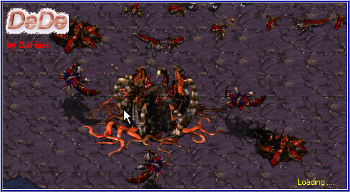

What is Dede.
DeDe is a very fast program that can analyze executables compiled with Delphi 2,3,4,5 and Builder and give you the following:
- All dfm files of the target. You will be able to open and edit them with Delphi.
- All published methods in well commented ASM code with references to strings,
imported function calls, classes methods calls, components in the unit,
Try-Except and Try-Finally blocks.
(By default DeDe retrieves only the published methods sources,
but you may also process another procedure in a executable
if you know the RVA offset using the Tools|Disassemble Proc menu.)
- A lot of additional information.
- You can create a Delphi project folder with all dfm,
pas, dpr files. Note: pas files contains the mentioned
above well commented ASM code.
They can not be recompiled !
You can also:
- View the PE Header of all PE Files and change/edit the sections flags.
- Use the opcode-to-asm tool for translating intel opcode to assembler.
- Use RVA-to-PhysOffset tool for fast converting physical and RVA addresses.
- Use the DCU Dumper (view dcu2int.txt for more details) to retrieve near to
pascal code of your DCU files.
- Use BPL(DPL) Dumper to see BPL exports and create symbol files to use with DeDe disassembler.
- Disassemble a target EXE directly from memory in case of a packed exe.
To contact the author of Dede : Dafixer
Last Update from 25-03-01